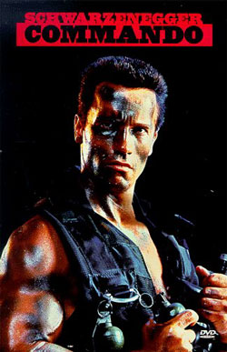

«Комма́ндо» (англ. «Commando») — американский кинофильм с Арнольдом Шварценеггером в главной роли, классический боевик 1980-х. Премьера состоялась 4 октября 1985 года. Съемки картины начались 22 апреля 1985 года в Калифорнии и продолжались 45 дней. В СССР фильм показывали в кинотеатрах с дубляжем студии «Синхрон» компании «Хлопушка». Фильм распространялся на видеокассетах ,в авторских ( одноголосых ) переводах : Андрея Гаврилова, Василия Горчакова, Юрия Товбина.
Полковник Джон Мэтрикс — отставной военный, уединённо живущий в горах и воспитывающий дочку Дженни. Однажды к Мэтриксу прилетает его бывший командир — генерал Франклин Кёрби. Мэтрикс узнаёт от него, что его бывших подчинённых убивают одного за другим. Генерал предполагает, что скоро убийцы доберутся и до Мэтрикса, и оставляет двух солдат охранять его дом. Нападение происходит незамедлительно после отлёта генерала, охранников убивают, дочь Мэтрикса похищают. Пытаясь остановить бандитов, увозящих его дочь, Мэтрикс вступает с ними в схватку, но терпит поражение и сам попадает в руки бандитов. Преступников, как оказалось, возглавляет старый враг Мэтрикса — свергнутый им жестокий диктатор Ариус, мечтающий вернуть власть, а помогает ему бывший сослуживец Мэтрикса — Беннет. Шантажируя полковника убийством дочери, Мэтрикса заставляют отправиться в Вальверде (вымышленная латиноамериканская страна) и убить её президента, чтобы Ариус мог снова возглавить государство. Сразу после посадки в самолёт, летящий в Вальверде, Мэтриксу удаётся нейтрализовать приставленного к нему бандита и сбежать с уже взлетевшего самолёта, выпрыгнув из него в водоём на небольшой высоте. Вместе с темнокожей девушкой Синди, с которой Мэтрикс знакомится по ходу дела, ему удаётся узнать координаты острова, где находится военная база Ариуса, и где он предположительно удерживает его дочь. Мэтрикс и Синди грабят оружейный магазин и на угнанном гидроплане отправляются на остров. Тем временем пассажирский самолёт прилетает в Вальверде, в самолёте обнаруживается труп бандита, приставленного следить за Мэтриксом, и об этом докладывают Ариусу и Беннету. Дженни должны убить, но ей удаётся сбежать и спрятаться в подвале одного из строений. В этот момент Мэтрикс высаживается на остров, он взрывает казармы и в одиночку атакует базу мятежников. Беннет ищет Дженни в подвале. Мэтрикс расправляется с оставшимися солдатами Ариуса, проникает в его дом и в перестрелке убивает диктатора. Затем он бежит в подвал на зов Дженни. Там происходит финальная схватка Мэтрикса и Беннета, в которой Мэтрикс с трудом побеждает. В финальной сцене на остров прилетает генерал Кёрби с подмогой. Генерал просит, чтобы Мэтрикс вернулся на службу, но он отвечает, что это была его последняя война. Мэтрикс, Синди и Дженни садятся в гидроплан и улетают. На фоне финальных титров звучит песня «We Fight for Love» группы The Power Station.
Де Соуза и Фрэнк Дарабонт написали сценарий для продолжения, основанный на книге Родерика Торпа «Ничто не вечно» (которая, в свою очередь, являлась продолжением к его же новелле «Детектив», по которой был снят одноимённый фильм с Фрэнком Синатра и Ли Ремик). Однако Шварценеггер не был заинтересован в нём: его предыдущий сиквел («Конан-разрушитель») был плохо принят критиками и не собрал ожидаемую кассу в американском прокате. Тогда сценарий был переработан под нового главного героя, которого впоследствии сыграл Брюс Уиллис, фильм был назван «Крепкий орешек» (англ. «Die Hard»).